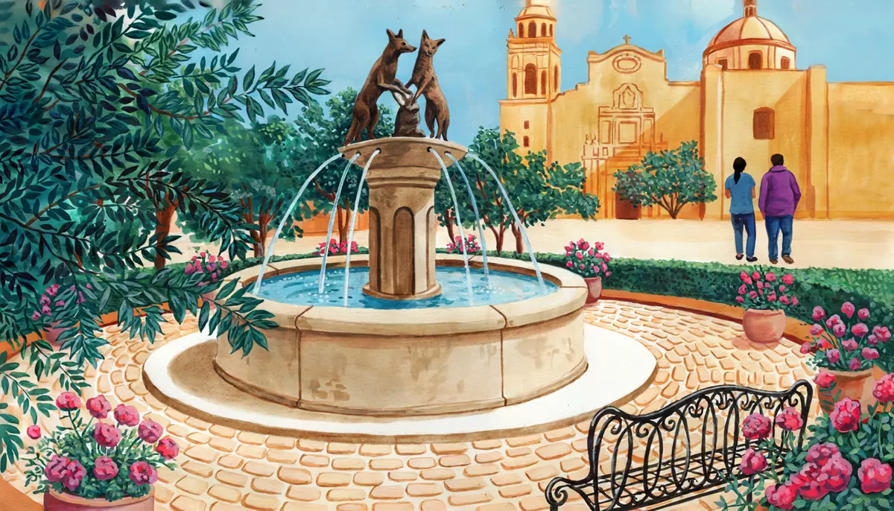

Unidad 1 · Coyoacán
¡Mucho gusto!
Nice to meet you
- 1.1Hola, ¿qué tal?Hello, how are you? · 65 minNew
- 1.2¿De dónde eres?Where are you from? · 70 minNew
- 1.3Mis datosMy details · 60 minNew
- Prueba de la unidad 1Unit test · 40 minNew
0 of 3 lessons